| Simpole® |
|
|
|---|
1553实时驱动（SimpoleD）是1553 板卡与系统模型的接口。 本节内容介绍1553 SimpoleD库的功能、配置。
具体内容如下：
1553板卡的SimpoleD库提供了各个相关功能SimpoleD模块，用于在simulink模型中实现1553协议的Bus Controller（BC）、Bus Monitor（BM）和Remote Terminal（RT）功能。
右键单击Open 1553 library，从菜单中打开AEC1553各个模块：
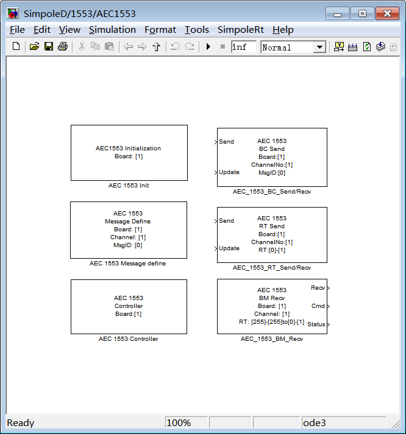
Bus Controller、Remote Terminal、Bus Monitor的各个模块的设置使用如下:
注意：在执行模型时，AEC1553 Init、AEC 1553 Message Define的执行顺序为先执行AEC1553 Init，再执行AEC 1553 Message Define。在搭建模型时，需要将上述两类模块按照其先后顺序进行命名（按照ASCII码中的顺序），默认的名字“AEC1553 Init”和“AEC1553 Message Define”能保证AEC1553 Init在AEC 1553 Message Define之前执行（I在M之前）。若需要修改上述两个模块的名称，需保证修改后的模块名称满足上述规则。
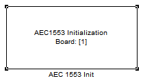
1553板卡工作模式初始化设置，配置选择板卡号、通道号（及BC、RT、BM工作模式使能）、应答超时、采样时间、RT编号等。
无。
1553 Init 模块的GUI配置界面如下图所示。
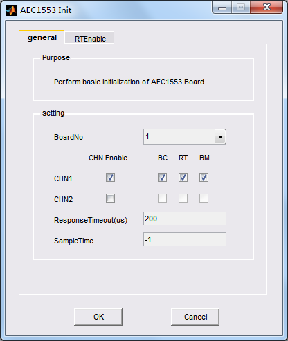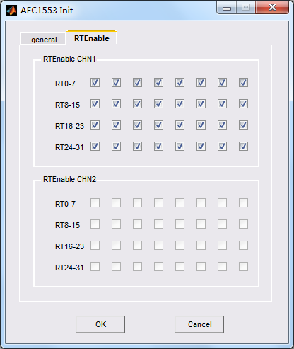
BoardNo：选择板卡号，范围为1至16；若系统中安装了多块同一类型的1553板卡，用Board Number进行区分和访问；
CHN1：设置是否使能通道1，及对应的BC、RT、BM工作模式；
CHN2: 设置是否使能通道2，及对应的BC、RT、BM工作模式；
ResponseTimeout(us)：设置应答超时；
SampleTi：设置采样时间，数据可设置为-1或>0.0的任一数值。当设置为-1时，采样时间继承仿真步长；
RTEbable：若使能了某通道的RT，可选择对应的RT号；若通道未使能，则不能进行勾选。
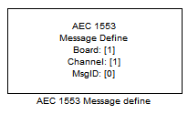
对编码的报文进行定义。
无。
1553 Message Define模块的GUI配置界面如下图所示。
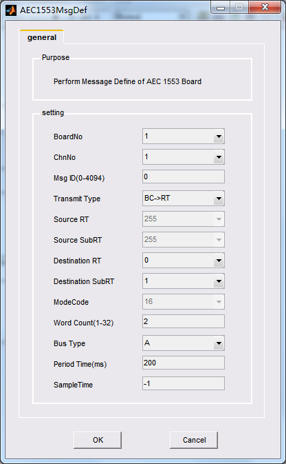
BoardNo:选择板卡号，范围为1至16；若系统中安装了多块同一类型的1553板卡，用Board Number进行区分和访问；
ChnNo：选择通道号，范围1至2；
Msg ID（0-4094）：需要编码的报文的序号，范围0至4094。注：当模型中有多条报文时，报文号选择必须从0开始连续选择。例如，若有五条报文，则报文序号分别为0、1、2、3、4；
Transmit Type：传输方式。包含四种选项：BC->RT，RT->BC，RT->RT，MODE。若使用BC->RT模式，则Source RT控件和Source SubRT被禁能；若使用RT->BC模式，则Destination RT
控件和Destination SubRT控件被禁能；若使用MODE，仅Source RT使能；
Source RT：源RT地址，选择范围0至31；
Source SubRT：源RT子地址，选择范围0至31。若报文为方式命令报文，则子地址默认为0或31，Word Count不需要设置；
Destination RT：目的RT地址，选择范围0至31，设为31时为广播地址；
Destination SubRT：目的RT子地址，选择范围0至31；
ModeCode：子地址为0或31时，可设置为16，实现RT非周期发送；
Word Count(1-32)：需要发送或接收的short类型（16位）的字的数目；
Bus Type：选择报文传输使用的总线（Bus A 、Bus B）；
Period Time：周期时间。若输入非0，则此消息为周期消息，其周期为设置值；若输入0，则此消息为非周期消息；
Sample Time：设置采样时间，数据可设置为-1或>0.0的任一数值。当设置为-1时，采样时间继承仿真步长。
非周期消息建模说明：
1、当BC向RT发送非周期消息时，需要将Message define模块中Transmit Type设置为BC->RT，并将Period Time（ms）设置为0。此时
将按照仿真周期由BC向RT发送非周期消息（由BC Send中的Update参数控制消息的发送）；
2、当RT向BC发送非周期消息时，需要将Message define模块中Transmit Type设置为RT->BC，并将Period Time（ms）设置为0。此外，
还需额外增加一个Message define模块，将其Transmit Type设置为Mode，设置Period Time（ms），并保证仿真周期为Period Time
（ms）的整数倍。此时将按照仿真周期由RT向BC发送非周期消息（由RT Send中的Update参数控制消息的发送）；
3、当RT向RT发送非周期消息时，需要将Message define模块中Transmit Type设置为RT->RT，并将Period Time（ms）设置为0。此外，
还需额外增加一个Message define模块，将其Transmit Type设置为Mode，设置Period Time（ms），并保证仿真周期为Period Time
（ms）的整数倍。此时将按照仿真周期由RT向RT发送非周期消息（由RT Send中的Update参数控制消息的发送）；
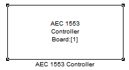
控制模块设置。
无。
1553 Controller模块的GUI配置界面如下图所示。
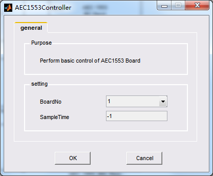
BoardNo:选择板卡号，范围为1至16；若系统中安装了多块同一类型的1553板卡，用Board Number进行区分和访问；
Sample Time：设置采样时间，数据可设置为-1或>0.0的任一数值。当设置为-1时，采样时间继承仿真步长。
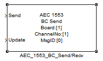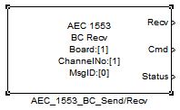
BC发送接收模块设置。
Send：待发送的数据字(UINT16)，仅对BC->RT命令字有效，包含周期和非周期数据；
Update：更新数据标识(UINT32)，发送周期数据，Update>0时更新发送数据，Update=0时不更新发送数据；发送非周期数据，Update>0时触发发送数据，Update=0时不发送数据；
Recv：RT向BC发送的数据字(UINT16)，仅对RT->BC有效；
Cmd：RT向BC发送的命令字(UINT32)，仅对RT->BC有效；
Status：RT向BC发送的状态字(UINT32)，仅对RT->BC有效。
1553 BC Send/Recv模块的GUI配置界面如下图所示。
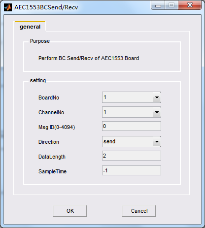
BoardNo:选择板卡号，范围为1至16；若系统中安装了多块同一类型的1553板卡，用Board Number进行区分和访问；
ChannelNo：选择通道号，范围1至2；
Msg ID（0-4094）：需要发送或接收的报文的序号，范围0至4094。
Direction：取值为Send和Recv。设置为Send，仅显示输入端口；设置为Recv，仅显示输出端口；
DataLength：数据长度。本次通讯需要传输的数据字的个数（UINT16），取值范围1至32；输入时设置有效，输出时设置无效；
Sample time：设置采样时间，数据可设置为-1或>0.0的任一数值。当设置为-1时，采样时间继承仿真步长。
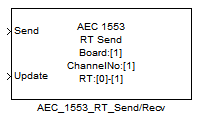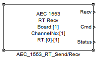
RT发送接收模块设置。
Send：RT待发送的数据字(UINT16)，仅对RT->BC、RT->RT命令字有效，包含周期和非周期数据、周期数据；
Update：更新数据标识(UINT32)，发送周期数据，Update>0时更新发送数据，Update=0时不更新发送数据；发送非周期数据，Update>0时触发发送非周期数据，设置矢量字，Update=0时不发送数据；
Recv：RT接收的数据字(UINT16)，仅对RT->RT、BC->RT有效；
Cmd：RT接收的命令字(UINT32)，仅对RT->RT、BC->RT有效；
Status：RT接收的状态字(UINT32)，仅对RT->RT、BC->RT有效。
1553 RT Send/Recv模块的GUI配置界面如下图所示。
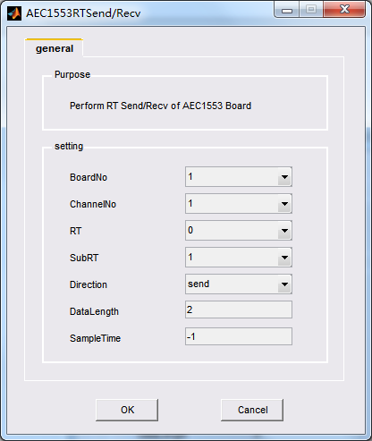
BoardNo:选择板卡号，范围为1至16；若系统中安装了多块同一类型的1553板卡，用Board Number进行区分和访问；
ChannelNo：选择通道号，范围1至2；
RT：RT地址，RT范围为0至31；
SubRT：RT子地址，SubRT 子地址范围为0至31；
Direction：取值为Send和Recv。设置为Send，仅显示输入端口，RT地址表示源地址；设置为Recv，仅显示输出端口，RT地址表示目的地址；
DataLength：数据长度。本次通讯需要传输的数据字的个数（UINT16），取值范围1至32；输入时设置有效，输出时设置无效；
Sampletime：设置采样时间，数据可设置为-1或>0.0的任一数值。当设置为-1时，采样时间继承仿真步长。
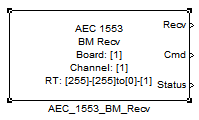
1553 BM接收模块设置。
Recv：BM接收的数据字(UINT16)；
Cmd：BM接收的命令字(UINT32)；
Status：BM接收的状态字(UINT32)。
1553 BM Recv模块的GUI配置界面如下图所示。
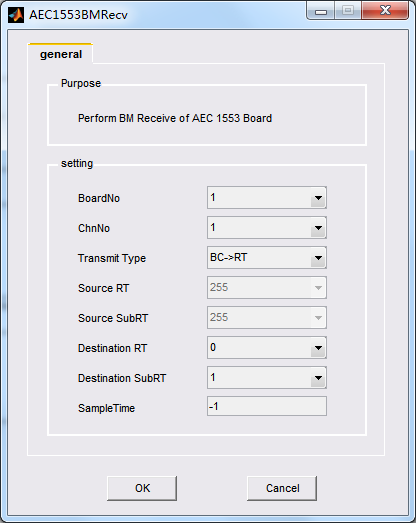
BoardNo:选择板卡号，范围为1至16；若系统中安装了多块同一类型的1553板卡，用Board Number进行区分和访问；
ChnNo：选择通道号，范围1至2；
Transmit Type：传输方式。包含四种选项：BC->RT，RT->BC，RT->RT，MODE。若使用BC->RT模式，则Source RT控件和Source SubRT被禁能；若使用RT->BC模式，则Destination RT
控件和Destination SubRT控件被禁能；若使用MODE，仅Source RT使能；
Source RT：源RT地址，选择范围0至31；
Source SubRT：源RT子地址，选择范围0至31。若报文为方式命令报文，则子地址默认为0或31；
Destination RT：目的RT地址，选择范围0至31，设为31时为广播地址；
Destination SubRT：目的RT子地址，选择范围0至31；
Sample time：设置采样时间，数据可设置为-1或>0.0的任一数值。当设置为-1时，采样时间继承仿真步长。
| AEC1553 Features |
AEC1553 Hardware Reference |
|---|